Snow reports
Daily snow reports for skiers: where the snow is, what is coming and where to ski, from the SnowScope snow map and measuring stations. Every number comes from that day's data.
English · Français · Deutsch · Italiano · Español · الدارجة · Svenska · Norsk · Suomi · Nederlands · Русский · Slovenščina · Català · Português · Polski · Čeština · Slovenčina · Magyar · Română · Українська · Български · Srpski · Bosanski · Hrvatski · Crnogorski · Македонски · Shqip · Ελληνικά · 日本語 · 简体中文
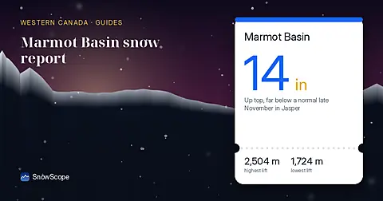
Marmot Basin's snow today, the next days, and why this start is unusual for one of Canada's most reliable early-season mountains.

Mt. Hood shows how much a few hundred feet matter: today's snow at Timberline, Meadows, Skibowl and Mt. Bachelor, the next three days, and what December usually brings.
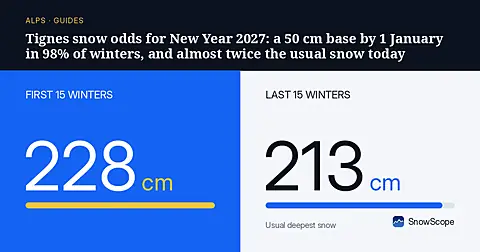
Tignes and the Espace Killy go into December far ahead of a normal year. What New Year's week usually looks like at 2,500 m, and how to plan it.
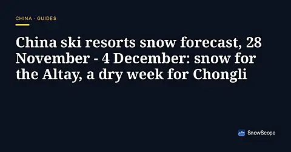
Koktokay could get about 13 cm, Hemu and Jiangjunshan about 8 cm by 4 December; Chongli, Yanqing and the Jilin resorts stay dry.

Northern Vermont gets its first real snow of the season over the Thanksgiving weekend. Resort by resort, north to south, and what is normal for early December.
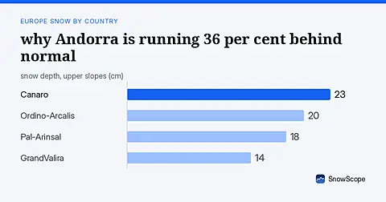
Andorra's highest resort Canaro holds 23 cm today, well below the 36 cm typical for late November. Fresh snow in the past three days has helped, but the season started late.

Whistler Blackcomb's upper slopes hold 8.7 ft (266 cm) after a 4.6 ft (141 cm) three-day storm. What 46 winters say about Christmas, and why the valley is the only question.

45 of 130 ski areas in northern China have natural snow today. Hemu has 70 cm, Koktokay 40 cm; around Chongli the natural snow is still under 10 cm.
Crystal, Stevens, Snoqualmie, Mt. Baker and White Pass after this week's storm: today's snow, the next three days, and what a normal December brings to each pass.
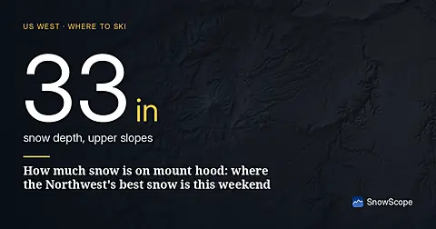
Mt. Hood Meadows leads the US West with 84 cm on upper slopes. Up to 35 cm more arrives by Sunday. SnowScope, 27 Nov.
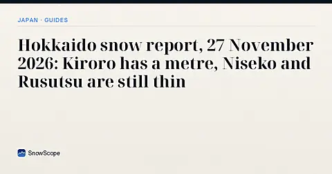
Snow on the upper slopes today: Kiroro 119 cm, Sapporo Kokusai 103 cm, Asahidake 61 cm, Niseko 31 cm, Furano 29 cm, Rusutsu 16 cm, and only light snow in the next 8 days.

A storm crosses central Japan on 28 and 29 November: rain on Saturday, then snow. Hakuba Happo-one gets about 62 cm on the upper slopes, Tsugaike 61 cm, Myoko Suginohara 57 cm.
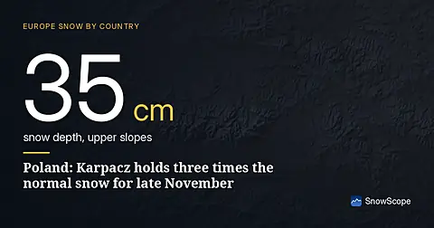
Poland's ski areas are well ahead of average. Karpacz has 31 cm, nearly three times the typical depth for this date, after 10 cm fell across the mountains in three days.
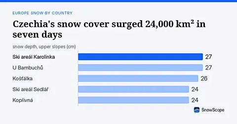
Czechia went from 420 km² of snow cover a week ago to 24,460 km² today. The transformation happened in the last two days as a system brought 12 cm across high ground.

La Grave has the deepest snow in the French Alps at 158 cm upper slopes. Peak season runs weeks 15-17. Data from 27 November 2026.

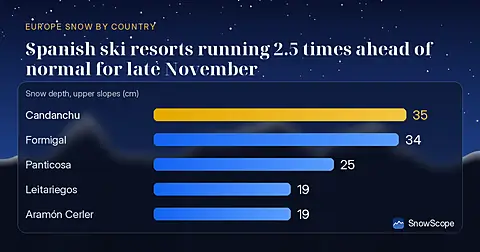
Candanchu holds 35 cm, well above its usual 14 cm for this date. Fresh snow across Spain's mountains is boosting early-season conditions on 25 November.

A seasonal snow outlook for 18 Mediterranean ranges, from the Atlas to Erciyes, built from the ECMWF and Météo-France seasonal forecasts (51 members each). Every range is 1.1 to 2.7 °C warmer than the 1991-2020 normal, precipitation stays near normal, but snowfall is below normal on 16 of the 18 ranges: High Atlas -48 %, Apennines -28 %, Pyrenees -24 %, Alps near normal.

Snow outlook for the central and Patagonian Andes from 24 November to 14 December 2026, from the 50-member ECMWF ensemble, NOAA GEFS and NASA MODIS: snow line on the ground near 3,000 m, Portillo 40 % above normal, Bariloche and Chapelco almost nothing.

Pyrenees snow forecast for the next 3 weeks from the 50-member ECMWF ensemble, NOAA GEFS and NASA MODIS: a near-normal fortnight overall (19.1 cm against 18.3 cm), snowy in the west and centre, lean towards Andorra and Cerdanya. Snow line on the ground about 1,500 m.

Western US and Canada snow forecast for the next 3 weeks from the 50-member ECMWF ensemble, NOAA GEFS and NASA MODIS: Whistler median 82 in (210 cm) by 8 December, Mammoth 21 in (53 cm), Alta 14 in (35 cm), Vail 14 in (34 cm). Lake Louise is the lean spot at 12 %.

Mt. Hood Meadows has 51 cm on upper slopes, well below the 73 cm average. Up to 66 cm new snow forecast by November 27 at Crystal Mountain.

Alps snow forecast for the next 3 weeks from the 50-member ECMWF ensemble, NOAA GEFS and NASA MODIS: 19.1 cm of fresh snow on average this week (normal 17.8), then only 9 cm from 1 to 8 December (normal 21.9). Isola 2000 74 % above normal, Chamonix 6 %.

A science-based snow outlook to mid-December 2026 for five mountain ranges: the 50-member ECMWF ensemble for days 1-15, NOAA GEFS for days 16-21, NASA MODIS for the snow on the ground today. Chance of more snow than the 1991-2020 normal: Atlas 4 %, Alps 10 %, Pyrenees 46 %, US-Canada West 88 %, Andes 12 %.

Snow outlook for the High and Middle Atlas, 24 November to 14 December 2026: 50 ECMWF ensemble members for 15 days, NOAA GEFS for days 16-21, NASA MODIS snow cover today. Only 4 % of members beat the 1991-2020 normal; Oukaïmeden median 0 cm, M'Goun 8.3 cm in the wettest tenth.

Mt Baker sits at 28 cm on upper slopes, right where November typically sees snow at this height. Fresh powder is arriving this week, especially Thursday.

Italy gained significant snow cover in a week, with the Aosta Valley receiving 176 cm in 72 hours. SnowScope shows 30,400 km² white on 24 November.

Rosa Khutor above Krasnaya Polyana: usual snow by month at the base, mid-mountain and top over 34 winters, the December gamble and the trend.

Finnish Lapland against the Swedish mountains: usual snow by month at eight resorts over 46 winters, who is losing snow and where it lies now.

How snow depth changes month by month at three top Dolomites resorts across 46 past winters, from base to summit.

Telluride has 51 in (130 cm) on upper slopes today. Brian Head Resort leads the US West with 57 in (144 cm), but Telluride's recent gains matter more for skiers planning the week ahead.
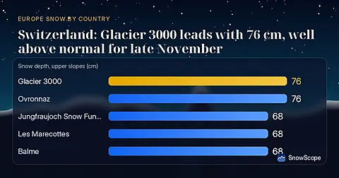
Switzerland has 76 cm at Glacier 3000 on 23 November, more snow than in nine winters out of ten. The Bernese Oberland and Valais Alps received up to 144 cm in three days.

14 Swiss resorts tracked on 23 November; Zermatt leads with 63 cm depth, 29 cm more forecast by 26 November.

Zugspitze tops the region with 63 cm on 23 November. Nine resorts have snow; 34 cm fell in three days at Nebelhorn.

Prà Alpesina will see 57 cm of new snow by 26 November. Forecast data from 23 November shows heaviest falls on 25 November as freezing level rises.

La Pierre Saint-Martin snow forecast: up to 42 cm expected by 26 November (Pyrenees). At Astun, the freezing level reaches 1,960 m to 3,170 m on 24 …

Alpe d'Huez got 106 cm of fresh snow in 72 hours by 23 November. More powder coming, but watch for rain mid-week.

Twelve famous Alpine resorts ranked by their usual December snow depth at mid-mountain and the top, from 46 past winters, with the poor-December floor for each and the weeks that never fail.

Rain threatens upper slopes at Saddleback Mountain where 20 cm sits at 1,218 m. Freezing level rises to 3,760 m today, 22 November.

Mount Rose Ski Tahoe has 38 in (97 cm) on 22 November, more than four times last year's 9 in (23 cm). All four major resorts tracked show gains.

Whistler Blackcomb leads Western Canada with 153 cm on upper slopes. Snow covers 398,620 km² across 52 of 57 resorts on 22 November.

Whistler Blackcomb will receive 101 cm of new snow by November 25, far exceeding early-season norms. Mount Cain Alpine Park leads the region with 132 cm forecast.

Bulgaria's mountains face significant snowfall in the next 7 days, with a peak of 10 cm on 28 November. Snow depth today is 1–9 cm at ski resorts; the Rila Mountains lead with 7 cm in 72 hours.

Croatia has 3 cm at Platak on 22 November; Slovenia's Sella Nevea holds 42 cm. Both countries face a thaw before the week's main snow event.

Hungary has no snow cover on 22 November, while Slovakia shows 13 %. The week ahead brings up to 8 cm, with the best chance on 26 November.

Snow covers 25% of Romania today as the winter season begins. The snow line is at 1,200 m, with 99% cover above 2,000 m. Data from 22 November 2026.
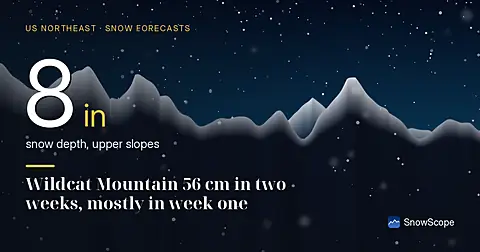
Wildcat Mountain forecast to gain 56 cm over 14 days. Week one (23–29 Nov) brings 29 cm, with 22 cm falling on 27 November. Data from 22 November.

Mixed rain and snow at Hurricane Ridge through 25 November. Up to 24 in (61 cm) forecast near the top; rain falls below 4,528 ft (1,380 m). Data from 22 November.

Jackson Hole received 11 in (28 cm) of fresh snow in 72 hours. SnowScope shows 186 resorts with snow across the US West on 22 November.

Mount Washington Alpine Resort forecast to receive 359 cm of new snow in the next 14 days, with the heaviest falls in week one. Data from 22 November 2026.

42 of 107 resorts in Slovakia show snow cover today. Vysoké Tatry leads with 33 cm at the summit as the season builds.

Sweden's snow cover stands at 314,500 km² on 22 November. SnowScope shows 2 cm in week one, then 12 cm in week two, with mountain peaks already holding 66 cm.

Kosovo's mountains face major snowfall ahead. SnowScope shows up to 65 cm in the next 7 days, with 19 cm expected on 28 November. Data from 22 November.

A major snow event is forecast for North Macedonia over the next week, with up to 47 cm expected by 2026-11-29. The heaviest falls arrive tomorrow.
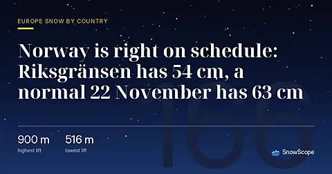
Riksgränsen holds 54 cm on 22 November, tracking closely with the 63 cm typical for this date. Snow covers 94% of Norway's mountains.

Cauterets Cirque du Lys leads the Pyrenees with 24 cm at the top on 22 November. Heavy snow forecast for 25 November will push coverage from 44 to 51 resorts.
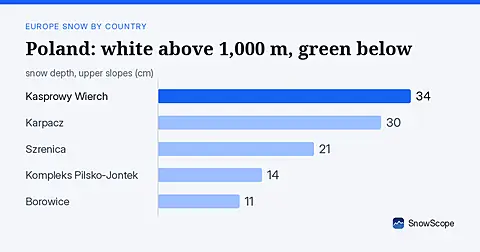
Poland has 1,080 km² of snow on 22 November. Above 1,000 m almost all slopes are white; below, they are mostly bare.

La Grave has 171 cm on upper slopes today, which is 68% of normal for late November. The Alps saw sharp gains this weekend.

Slovenia's mountains gained 1880 km² of snow cover in three days. The Julian Alps saw the most fall, with 40 cm, while lower ranges stayed dry.

The 0 °C level rises to 3200 m on Tuesday, bringing rain to mid-mountain slopes. Snow line stays above base at most resorts until Wednesday.
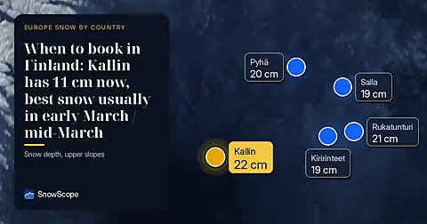
Kallin holds 11 cm at 40 m on 22 November, nearly double its normal depth. Best snow arrives in weeks 9–11 (early to mid-March).

72-hour snowfall mapped across Ukrainian ranges: Chornohora led with 24 cm, Gorgany 19 cm, Borzhava 14 cm. Data from 2026-11-22.

The Alps will collect up to 95 cm of new snow in the next 14 days, with 63% arriving in the first week. Best conditions above 1500 m from November 23. Data from November 22.

German snow cover jumped from 5,460 to 10,730 km² in a week. The Allgäu Alps lead with 47 cm of fresh snow in 72 hours as of 22 November.

By 25 November, 64 cm of new snow forecast at Jungfraujoch Snow Fun Park. Data from 22 November.

Austria gained 11,600 km² of snow in seven days. Stubaier Gletscher leads with 67 cm. Data from 22 November 2026.

Feldberg has 18 cm on upper slopes (22 Nov). Three resorts hold snow; fresh 30 cm in 72 hours, 9 cm more by 25 Nov.
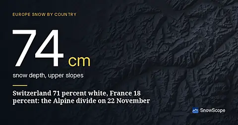
Swiss Alps covered 71 percent white versus 18 percent in France as of 22 November. Valais holds 166 cm in 72 hours.

Lech/Zürs leads with 47 cm depth and 46 cm fresh snow in 72 hours. All 11 resorts have snow. Data from 22 November.

La Grave has 171 cm of snow, far ahead of the typical 82 cm for late November. France's Alps gained 90 cm in 72 hours as of 22 November.

Port del Comte sits 1744–2122 m above Solsona: natural snow depth peaks at 26–40 cm across the mountain, mostly in January and February. Data from 46 past winters.

The Mölltal glacier above Flattach: usual snow depth at the base, mid-mountain and the top from 46 past winters, from the first snow in September to the May skiing, and why the depth is a different world from the valley.

Tignes climbs from 1559 m to 3447 m across 46 past winters. Base: 117 cm peak. Mid-mountain: 216 cm. Glacier: 372 cm. Data from November 2026.

Hafjell above Lillehammer month by month: usual snow depth at the base, mid-mountain and the top from 46 past winters, the first snow, the deepest weeks and how the recent winters compare.

Kvitfjell's 46-winter snow record: when to expect deep snow for the speed races and spring skiing on Norway's Olympic downhill course.

Why Trysil's snow report shows two very different numbers: usual depth at the base, mid-mountain and the top of Trysilfjellet from 46 past winters, month by month, and what it means for the runs you will ski.
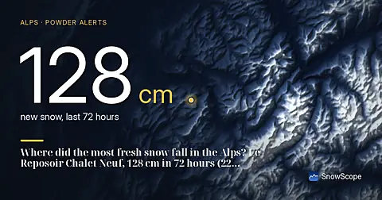
Where did the most fresh snow fall in the Alps? Fresh snow at Le Reposoir Chalet Neuf: 128 cm in the last 72 hours, including 88 cm in the last 24. …

Italy has 101 cm at La Thuile ski on 22 November, three times the normal depth for this date. The Aosta Valley led with 242 cm in 72 hours.

Piau-Engaly sits at 1762 m with runs to 2527 m. Over 46 past winters, the usual peak depth is 88 cm at the base, 123 cm at mid-mountain and 159 cm at the top.

Gavarnie-Gèdre leads the Pyrenees with 26 cm on upper slopes on 22 November. Snow coverage has tripled in two days across the region.

Jungfraujoch leads Europe with 44 cm in 24 hours; Mount Cain Alpine Park forecast for 132 cm in 72 hours. Forecast from 2026-11-22.

46 winters of snow history at Alpe d'Huez show peak depths of 52 cm at base, 184 cm mid-mountain, 440 cm at top. Data from 1980–2026.

Fresh snow is filling Albania's high mountains fast. Up to 34 cm is forecast in the next week, with 16 cm expected on Monday 23 November.

Czechia's white cover fell from 1,780 km² to 620 km² in seven days. Snow above 1,200 m offers the best chance for skiing on 21 November.

77% of Finland's mapped high ground is snow-covered on 21 November. The snow line divides the country: continuous runs above 500 m, patchy terrain below.

Fresh snow fell unevenly across Polish mountains in 72 hours to 21 November. The Tatras lead with 21 cm; lower ranges collected less.

Romania's snow cover stands at 11% on 21 November, while Ukraine holds 52%. Fresh snow is building across Romanian peaks ahead of a 13 cm event on 23 November.

The 0 °C level reaches 12,861 ft (3,920 m) on 21 November in the US Northeast. Snow line peaks at 11,811 ft (3,600 m), above all resort tops.

Today's snow in the US Northeast, read, means thin early-season snow, icy mornings and soft afternoons and warm air that …

The forecast shows up to 199 cm across the US West in the next two weeks, with the heaviest snow arriving in week one. Data from 21 November 2026.

Mt Baker will see 22 cm of new snow by November 24, but the freezing level rises above 1,000 m on November 22, bringing rain-on-snow risk to lower slopes.

Telluride holds 50 in (127 cm) on upper slopes as of 21 November. Brian Head Resort leads the US West with 54 in (138 cm).

Kirkwood leads the US West with 109 cm on upper slopes as of 21 November. Early-season snow depth guide for skiers.

Two-week snow forecast for Western Canada: Mount Washington Alpine Resort forecast to receive 202 cm by 5 December, with the heaviest snow on 24 November.

Mount Washington Alpine Resort leads with 76 cm of new snow forecast by 24 November. Data from 21 November 2026.

150 cm on the upper slopes: that is why Whistler Blackcomb heads our list. Snow on the ground, snow from the last 72 hours, snow still to come: …

Ukraine saw snow cover jump from 6,040 to 9,120 km² in seven days. Драгобрат leads with 17 cm depth; heavy snow forecast through November.

Slovakia has 2,680 km² under snow after 17 cm of fresh snow in 72 hours, far outpacing Czechia. Data from 21 November 2026.

Fresh snow fell unevenly across Germany in the past 72 hours: 39 cm in the Allgäu Alps, 31 cm in the Bavarian Alps, 16 cm in the Black Forest. Data from 2026-11-21.

Riksgränsen holds 167 cm today. SnowScope shows late March and mid-April are usually the snowiest weeks. Next seven days: up to 26 cm possible.

Snow-covered area fell from 3,570 km² to 330 km² in one week. Only the highest peaks above 2,000 m hold snow as of 21 November.

No snow on Atlas pistes on 21 November. High summits hold 1 cm at most. All three resorts are bare; the next storm may take weeks.

Rain above 2980m today at Gavarnie-Gèdre, but more snow arrives in four days. What to wear and bring for changing Pyrenees conditions.

Björkliden has 138 cm today. Sweden averaged 95 cm across measured resorts. Snow depth peaks in mid-April (weeks 14–15). Data from 21 November 2026.

Slovenia faces major snowfall over the next 7 days, with up to 53 cm expected. The heaviest falls arrive on 26 November. Data from 21 November.

0 °C level in the Alps next days: 1,330–3,210 m. Snow line peaks at 2,900 m on 22 November. Rain-on-snow risk at mid-mountain resorts Sunday 22 November.

Orelle sits at 74 cm on 21 November, matching the seasonal average of 64 cm. France has 12,530 km² of snow cover as fresh storms arrive.

Fourteen days of new snow across the Alps from 22 November to 5 December: Les Deux Alpes gets about 94 cm, with 73% arriving in week one. Data from 21 November.

Austria has snow across 56 percent of measured terrain on 21 November, far ahead of Germany at 7 percent. Vorarlberg received 47 cm in three days.

Snow in Switzerland on 21 November: snow depth on the upper slopes, fresh snow, the next three days and the pick for a short trip.
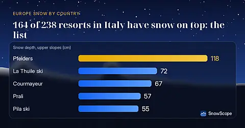
164 Italian resorts have snow today. Pfelders leads with 118 cm on upper slopes. Up to 55 cm fell in three days.
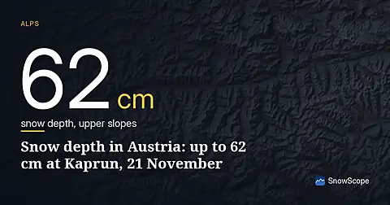
Kaprun leads Austria with 62 cm. Twelve resorts tracked on 21 November; more snow forecast through 24 November.

Switzerland's white ground grew by 6,410 km² in one week. Latest snow the forecast shows 19,880 km² covered as of 21 November.
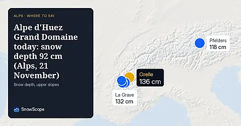
Alps snow report, 21 November: Alpe d'Huez has 92 cm on upper slopes. Orelle leads the region with 136 cm. Fresh snow incoming by Tuesday.

La Pierre Saint-Martin receives 18 cm of new snow over the next days. Forecast for the Pyrenees from 21 November shows most snow above 1,900 m.

Les Arcs received 102 cm of fresh snow in the past 72 hours with 80 cm forecast by 24 November. SnowScope report for 21 November.

Germany has 1790 km2 of snow cover on 20 November, Austria leads with 44 percent white cover. The Allgäu Alps received 34 cm in 72 hours.
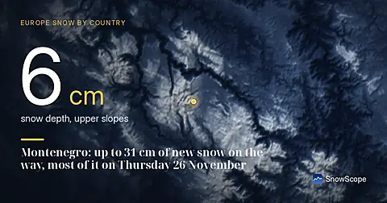
Montenegro's mountains could see 31 cm of snow in the week ahead, with 24 cm forecast for Thursday 26 November. Data from 20 November.

Slovakia lost 2,980 km² of snow cover in a week. High peaks still hold 17-28 cm, but lower slopes are bare. As of 20 November.
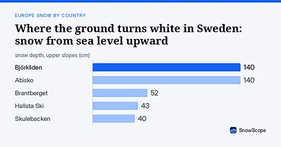
Sweden's snow cover reaches from sea level across 90 percent of the mapped area on November 20. Heights above 1000 m hold 42 cm average depth.